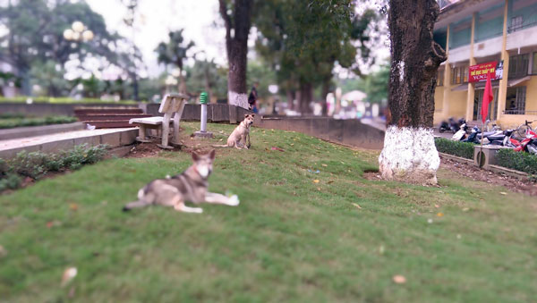

Camera vẫn 4MP nhưng nhiều tính năng
Camera là thành phần được HTC tập trung nâng cấp trên chiếc One mới. Như đã đề cập phía trên, M8 vẫn sử dụng camera UltraPixel 4MP kích cỡ 1/3 inch với ống kính góc rộng 28mm và khẩu f/2.0 tương tự chiếc One 2013. Điểm mới trên chiếc điện thoại năm nay là có thêm camera phụ. Tuy vậy, chiếc camera phụ không thực hiện việc chụp ảnh mà đóng vai trò tính toán khoảng cách của các đối tượng trong ảnh để thu thập thông tin về độ sâu hình ảnh và giúp máy lấy nét nhanh hơn (0,3 giây). Theo HTC, thông tin độ sâu hình ảnh thu được từ camera phụ còn được dùng cho tính năng lấy nét sau khi chụp.
Chiếc camera sau của M8 được bổ sung cặp đèn flash hai màu trắng và vàng nhằm cải thiện màu sắc các bức ảnh chụp thiếu sáng. Trong khi đó, camera trước cũng được tăng độ phân giải lên 5MP, hướng đến trào lưu chụp tự sướng đang lên hiện nay.
Giao diện ứng dụng camera của M8 thay đổi khá nhiều, trông đơn giản dễ dùng và có thêm nhiều tính năng mới. Ngoài các tính năng cơ bản kế thừa từ One 2013 như chụp hai camera, chụp liên tục và tính năng Zoe, chiếc M8 được bổ sung chế độ chụp chân dung và đặc biệt là tính năng lấy nét sau khi chụp. Cách lấy nét sau khi chụp của M8 cũng khác biệt so với các điện thoại của Nokia, Samsung và Sony ở chỗ không phải chọn chế độ lấy nét riêng trước khi chụp. Với tính năng chụp trước lấy nét sau ở các máy khác, ví dụ trên máy Nokia thì máy phải chụp tới 7 tấm ảnh ở độ sâu khác nhau, sau đó ghép lại để thực hiện việc tùy chỉnh điểm nét sau khi chụp. Trong khi đó, ảnh chụp từ camera sau của One M8 có thể áp dụng ngay tính năng lấy nét sau khi chụp nhờ vào thiết kế camera kép.
Bên cạnh các chế độ tự động, camera của One M8 có chế độ chụp chỉnh tay hoàn toàn, cho phép người dùng tùy chỉnh nhiệt màu, ISO, bù trừ sáng, khoảng lấy nét và thời gian phơi sáng tới 4 giây để chụp thiếu sáng.
Ngoài giao diện mới mẻ và nhiều chế độ chụp, M8 có tốc độ chụp và lấy nét nhanh hơn thế hệ cũ. Tuy nhiên, chất lượng ảnh của HTC One M8 dù có nhiều cải thiện nhưng vẫn gặp vấn đề giống với HTC One trước đây, nhìn chung chưa theo kịp các đối thủ cạnh tranh, nhất là về độ chi tiết và độ rộng của dải màu. Khi chụp ở môi trường ánh sáng tốt, ảnh chụp của HTC One M8 thu được ít chi tiết hơn và dải màu hẹp hơn so với Galaxy S5 và Xperia Z2. Thế nhưng dung lượng ảnh chụp của M8 nhỏ bằng nửa (hơn 2MB) so với ảnh chụp từ Galaxy S5 và Xperia Z2 (4-5MB) nên việc chia sẻ lên mạng xã hội thuận tiện hơn. Ở môi trường trong nhà và thiếu sáng, điểm ảnh cỡ lớn giúp One M8 thu sáng tốt hơn Galaxy S5. Đặc biệt, khả năng đẩy thời gian phơi sáng tới 4 giây ở chế độ chỉnh tay cũng rất hữu ích khi chụp thiếu sáng, giúp ảnh sáng rõ hơn mà không cần tăng ISO. Tuy nhiên khi chụp ở môi trường thiếu sáng, tốc độ lấy nét của máy chậm, nên ảnh chụp dễ bị mất nét.